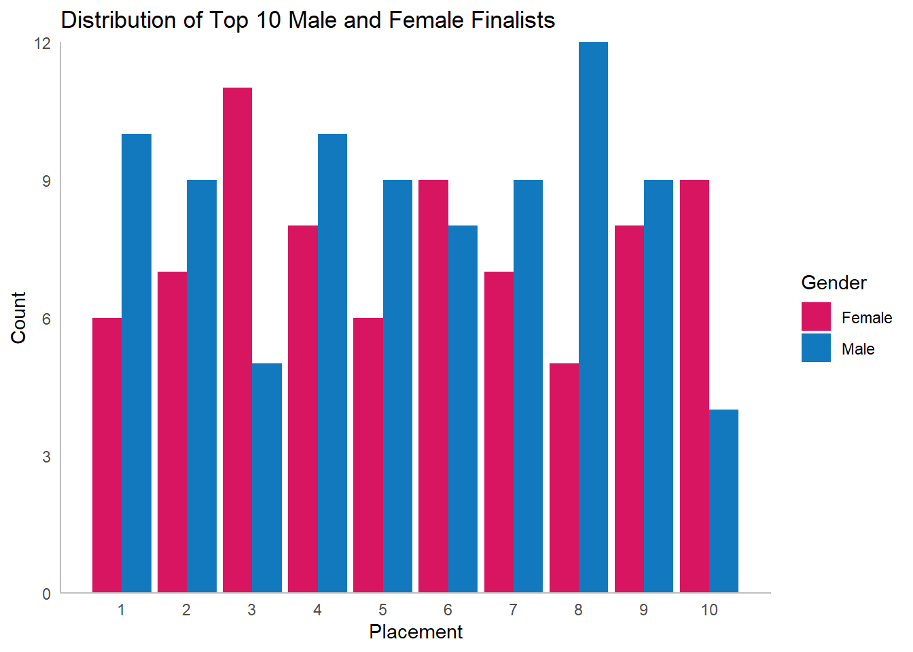
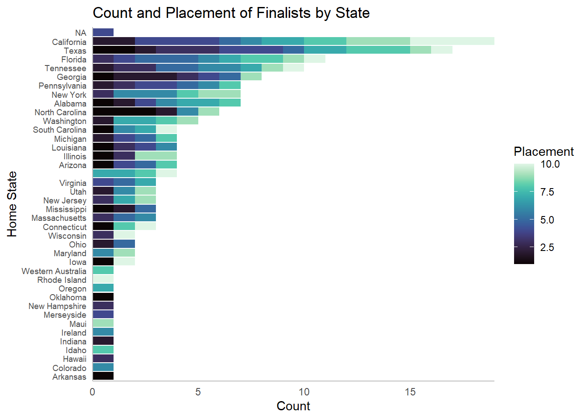

For this exercise we are tasked with performing an analysis on the latest Tidy Tuesday dataset. Given that the exercise is intended to give us an opportunity for an end to end analysis, I want to use this as an opportunity to show my thought process when it comes to an analysis. Likely this means there will be plenty of rambling and word vomit, but my intended focus is the work flow itself and less the end result. I will save the polished up manuscripts and final results for larger projects.
This week’s dataset is one on American Idol data, scraped from Wikipedia tables as I understand. I don’t have a lot of familiarity with the show since I’ve never been a fan myself, so one way or another this will absolutely be a learning experience.
We start by loading the dataset.
Installing package into 'C:/Users/Hylti/AppData/Local/R/win-library/4.3'
(as 'lib' is unspecified)
also installing the dependency 'cli'
package 'cli' successfully unpacked and MD5 sums checked
package 'tidymodels' successfully unpacked and MD5 sums checked
The downloaded binary packages are in
C:\Users\Hylti\AppData\Local\Temp\RtmpeyQcf0\downloaded_packages
tidymodels installed
#code below is taken from the tidy tuesday github#tuesdata <- tidytuesdayR::tt_load('2024-07-23')#auditions <- tuesdata$auditions#eliminations <- tuesdata$eliminations#finalists <- tuesdata$finalists#ratings <- tuesdata$ratings#seasons <- tuesdata$seasons#songs <- tuesdata$songs# Clean data provided by <https://github.com/kkakey/American_Idol>. No cleaning was necessary.auditions <- readr::read_csv("https://raw.githubusercontent.com/kkakey/American_Idol/main/metadata/auditions.csv")
Rows: 142 Columns: 12
── Column specification ────────────────────────────────────────────────────────
Delimiter: ","
chr (6): audition_city, audition_venue, episodes, episode_air_date, callbac...
dbl (2): season, tickets_to_hollywood
date (4): audition_date_start, audition_date_end, callback_date_start, callb...
ℹ Use `spec()` to retrieve the full column specification for this data.
ℹ Specify the column types or set `show_col_types = FALSE` to quiet this message.
Rows: 456 Columns: 46
── Column specification ────────────────────────────────────────────────────────
Delimiter: ","
chr (44): place, gender, contestant, top_36, top_36_2, top_36_3, top_36_4, t...
dbl (1): season
lgl (1): comeback
ℹ Use `spec()` to retrieve the full column specification for this data.
ℹ Specify the column types or set `show_col_types = FALSE` to quiet this message.
Rows: 190 Columns: 6
── Column specification ────────────────────────────────────────────────────────
Delimiter: ","
chr (5): Contestant, Birthday, Birthplace, Hometown, Description
dbl (1): Season
ℹ Use `spec()` to retrieve the full column specification for this data.
ℹ Specify the column types or set `show_col_types = FALSE` to quiet this message.
Rows: 593 Columns: 17
── Column specification ────────────────────────────────────────────────────────
Delimiter: ","
chr (12): episode, airdate, 18_49_rating_share, timeslot_et, dvr_18_49, dvr_...
dbl (4): season, show_number, viewers_in_millions, nightlyrank
lgl (1): ref
ℹ Use `spec()` to retrieve the full column specification for this data.
ℹ Specify the column types or set `show_col_types = FALSE` to quiet this message.
Rows: 18 Columns: 10
── Column specification ────────────────────────────────────────────────────────
Delimiter: ","
chr (8): winner, runner_up, original_release, original_network, hosted_by, j...
dbl (2): season, no_of_episodes
ℹ Use `spec()` to retrieve the full column specification for this data.
ℹ Specify the column types or set `show_col_types = FALSE` to quiet this message.
Rows: 2429 Columns: 8
── Column specification ────────────────────────────────────────────────────────
Delimiter: ","
chr (7): season, week, contestant, song, artist, song_theme, result
dbl (1): order
ℹ Use `spec()` to retrieve the full column specification for this data.
ℹ Specify the column types or set `show_col_types = FALSE` to quiet this message.
Then looking at the raw data.
#lots of tables, so I'm using lapply to save myself some typinglapply(list(auditions, eliminations, finalists, ratings, seasons, songs), head)
[[1]]
# A tibble: 6 × 12
season audition_date_start audition_date_end audition_city audition_venue
<dbl> <date> <date> <chr> <chr>
1 1 2002-04-20 2002-04-22 Los Angeles, Cali… Westin Bonave…
2 1 2002-04-23 2002-04-25 Seattle, Washingt… Hyatt Regency…
3 1 2002-04-26 2002-04-28 Chicago, Illinois Congress Plaz…
4 1 2002-04-29 2002-05-01 New York City, Ne… Millenium Hil…
5 1 2002-05-03 2002-05-05 Atlanta, Georgia AmericasMart/…
6 1 2002-05-05 2002-05-07 Dallas, Texas Wyndham Anato…
# ℹ 7 more variables: episodes <chr>, episode_air_date <chr>,
# callback_venue <chr>, callback_date_start <date>, callback_date_end <date>,
# tickets_to_hollywood <dbl>, guest_judge <chr>
[[2]]
# A tibble: 6 × 46
season place gender contestant top_36 top_36_2 top_36_3 top_36_4 top_32
<dbl> <chr> <chr> <chr> <chr> <chr> <chr> <chr> <chr>
1 1 1 Female Kelly Clarkson <NA> <NA> <NA> <NA> <NA>
2 1 2 Male Justin Guarini <NA> <NA> <NA> <NA> <NA>
3 1 3 Female Nikki McKibbin <NA> <NA> <NA> <NA> <NA>
4 1 4 Female Tamyra Gray <NA> <NA> <NA> <NA> <NA>
5 1 5 Male R. J. Helton <NA> <NA> <NA> <NA> <NA>
6 1 6 Female Christina Christ… <NA> <NA> <NA> <NA> <NA>
# ℹ 37 more variables: top_32_2 <chr>, top_32_3 <chr>, top_32_4 <chr>,
# top_30 <chr>, top_30_2 <chr>, top_30_3 <chr>, top_25 <chr>, top_25_2 <chr>,
# top_25_3 <chr>, top_24 <chr>, top_24_2 <chr>, top_24_3 <chr>, top_20 <chr>,
# top_20_2 <chr>, top_16 <chr>, top_14 <chr>, top_13 <chr>, top_12 <chr>,
# top_11 <chr>, top_11_2 <chr>, wildcard <chr>, comeback <lgl>, top_10 <chr>,
# top_9 <chr>, top_9_2 <chr>, top_8 <chr>, top_8_2 <chr>, top_7 <chr>,
# top_7_2 <chr>, top_6 <chr>, top_6_2 <chr>, top_5 <chr>, top_5_2 <chr>, …
[[3]]
# A tibble: 6 × 6
Contestant Birthday Birthplace Hometown Description Season
<chr> <chr> <chr> <chr> <chr> <dbl>
1 Kelly Clarkson 24-Apr-82 Fort Worth, Texas Burleso… "She perfo… 1
2 Justin Guarini 28-Oct-78 Columbus, Georgia Doylest… "He perfor… 1
3 Nikki McKibbin 28-Sep-78 Grand Prairie, Texas <NA> "She had p… 1
4 Tamyra Gray 26-Jul-79 Takoma Park, Maryla… Atlanta… "She had a… 1
5 R. J. Helton 17-May-81 Pasadena, Texas Cumming… "J. Helton… 1
6 Christina Christian 21-Jun-81 Brooklyn, New York <NA> ".Christin… 1
[[4]]
# A tibble: 6 × 17
season show_number episode airdate `18_49_rating_share` viewers_in_millions
<dbl> <dbl> <chr> <chr> <chr> <dbl>
1 1 1 Auditions June 1… 4.8 9.85
2 1 2 Hollywood… June 1… 5.2 11.2
3 1 3 Top 30: G… June 1… 5.2 10.3
4 1 4 Top 30: G… June 1… 4.7 9.47
5 1 5 Top 30: G… June 2… 4.5 9.08
6 1 6 Top 30: G… June 2… 4.2 8.53
# ℹ 11 more variables: timeslot_et <chr>, dvr_18_49 <chr>,
# dvr_viewers_millions <chr>, total_18_49 <chr>,
# total_viewers_millions <chr>, weekrank <chr>, ref <lgl>, share <chr>,
# nightlyrank <dbl>, rating_share_households <chr>, rating_share <chr>
[[5]]
# A tibble: 6 × 10
season winner runner_up original_release original_network hosted_by judges
<dbl> <chr> <chr> <chr> <chr> <chr> <chr>
1 1 Kelly Cla… Justin G… June 11 (2002-0… Fox Ryan Sea… Paula…
2 2 Ruben Stu… Clay Aik… January 21 (200… Fox Ryan Sea… Paula…
3 3 Fantasia … Diana De… January 19 (200… Fox Ryan Sea… Paula…
4 4 Carrie Un… Bo Bice January 18 (200… Fox Ryan Sea… Paula…
5 5 Taylor Hi… Katharin… January 17 (200… Fox Ryan Sea… Paula…
6 6 Jordin Sp… Blake Le… January 16 (200… Fox Ryan Sea… Paula…
# ℹ 3 more variables: no_of_episodes <dbl>, finals_venue <chr>, mentor <chr>
[[6]]
# A tibble: 6 × 8
season week order contestant song artist song_theme result
<chr> <chr> <dbl> <chr> <chr> <chr> <chr> <chr>
1 Season_01 20020618_top_30_gro… 1 Tamyra Gr… And … Jenni… <NA> Advan…
2 Season_01 20020618_top_30_gro… 2 Jim Verra… When… Doris… <NA> Advan…
3 Season_01 20020618_top_30_gro… 3 Adriel He… I'll… Edwin… <NA> Elimi…
4 Season_01 20020618_top_30_gro… 4 Rodesia E… Dayd… The M… <NA> Elimi…
5 Season_01 20020618_top_30_gro… 5 Natalie B… Crazy Patsy… <NA> Elimi…
6 Season_01 20020618_top_30_gro… 6 Brad Estr… Just… James… <NA> Elimi…
Warning: There was 1 warning in `dplyr::summarize()`.
ℹ In argument: `dplyr::across(tidyselect::any_of(variable_names),
mangled_skimmers$funs)`.
ℹ In group 0: .
Caused by warning:
! There were 20 warnings in `dplyr::summarize()`.
The first warning was:
ℹ In argument: `dplyr::across(tidyselect::any_of(variable_names),
mangled_skimmers$funs)`.
Caused by warning in `grepl()`:
! unable to translate 'Jos<8e> "Sway" Penala' to a wide string
ℹ Run `dplyr::last_dplyr_warnings()` to see the 19 remaining warnings.
A lot of missing values across several different variables and tables. I want to start with the contestants, namely the finalists. The finalists dataset has Hometown and Birthplace, with many missing hometown but few missing birthplace. Looking at the tables on Wikipedia, it appears that many of the people with missing Hometowns in the dataset have their birthplace listed as their hometown. I check around 10 of them across different seasons, which may not be a lot but for the sake of this exercise is enough to make me comfortable to impute the hometown with their birthplace when it’s missing. I think Hometown is a more meaningful variable, so if I do something like determining the impact of location on advancement I think hometown is the more reasonable method. Last thing to note, season 18 is included in the eliminations and song datasets but not the finalists dataset.
# logical if_else statement to impute birthplace only when hometown is missingfinalists2 <- finalists %>%mutate(Hometown =if_else(is.na(Hometown), Birthplace, Hometown))
There are only a few with missing hometowns now, and I’m tempted to impute these manually by referencing the material found in Wikipedia since it looks like it’s mostly available there. I will resist the urge for now, moving on to joining some of the dataframes for a master finalist dataset.
Eliminations has the placement of the contestants, as well as their gender, so I want to bring those in. There’s much more in eliminations, but the format of the show is inconsistent across seasons so there would be a lot of cleaning to do to make the data more analysis-friendly. For example, I’d be interested in getting the episode someone is eliminated to then bring in things like ratings and viewership of said episodes, but there aren’t common keys across ratings, songs, or eliminations datasets, which would have the data necessary to accomplish that. For now, I think the placement can serve as the contestants success variable and ratings and viewership will have to be a little more disjointed.
# left join to keep everything from finalistsfinalists3 <- finalists2 %>%left_join(eliminations,join_by(Contestant == contestant, Season == season) ) %>%select(c(names(finalists2), place, gender))finalists3 %>%head()
# A tibble: 6 × 8
Contestant Birthday Birthplace Hometown Description Season place gender
<chr> <chr> <chr> <chr> <chr> <dbl> <chr> <chr>
1 Kelly Clarkson 24-Apr-… Fort Wort… Burleso… "She perfo… 1 1 Female
2 Justin Guarini 28-Oct-… Columbus,… Doylest… "He perfor… 1 2 Male
3 Nikki McKibbin 28-Sep-… Grand Pra… Grand P… "She had p… 1 3 Female
4 Tamyra Gray 26-Jul-… Takoma Pa… Atlanta… "She had a… 1 4 Female
5 R. J. Helton 17-May-… Pasadena,… Cumming… "J. Helton… 1 5 Male
6 Christina Christ… 21-Jun-… Brooklyn,… Brookly… ".Christin… 1 6 Female
A few contestants have some foreign characters characters in their names, and the way the tables were read looks like there is some discrepancy that caused different values across our datasets. I will have to correct this first and then join the datasets.
# Some simple string replacements and conditionals to fix names prior to joinfinalists4 <- finalists2 %>%mutate(Contestant =str_replace_all(Contestant, '\x8e', 'é'),Contestant =if_else(Contestant =='Chikezie Eze', 'Chikezie', Contestant),Nickname =trimws(str_extract(Contestant, '".*?"'), whitespace ='"'),Contestant =if_else(!is.na(Nickname) & Nickname !='Sway', paste(Nickname, word(Contestant, -1)), Contestant),Contestant =if_else(Contestant =='Bobby Bennett, Jr.', 'Bobby Bennett', Contestant)) %>%select(-Nickname) %>%left_join(eliminations,join_by(Contestant == contestant, Season == season) ) %>%select(c(names(finalists2), place, gender)) # only want two variables from eliminationsfinalists4 %>%head() # checking new variables look right
# A tibble: 6 × 8
Contestant Birthday Birthplace Hometown Description Season place gender
<chr> <chr> <chr> <chr> <chr> <dbl> <chr> <chr>
1 Kelly Clarkson 24-Apr-… Fort Wort… Burleso… "She perfo… 1 1 Female
2 Justin Guarini 28-Oct-… Columbus,… Doylest… "He perfor… 1 2 Male
3 Nikki McKibbin 28-Sep-… Grand Pra… Grand P… "She had p… 1 3 Female
4 Tamyra Gray 26-Jul-… Takoma Pa… Atlanta… "She had a… 1 4 Female
5 R. J. Helton 17-May-… Pasadena,… Cumming… "J. Helton… 1 5 Male
6 Christina Christ… 21-Jun-… Brooklyn,… Brookly… ".Christin… 1 6 Female
finalists4 %>%filter(is.na(place)) # checking for any nulls from poor join
# A tibble: 0 × 8
# ℹ 8 variables: Contestant <chr>, Birthday <chr>, Birthplace <chr>,
# Hometown <chr>, Description <chr>, Season <dbl>, place <chr>, gender <chr>
Note that I had to manually override Bobby Bennett’s name because there are other contestants with a “Jr.” suffix that were able to join across the tables.
From the eliminations dataset we brought over the place that each finalist ultimately ended the show in. However, in several instances multiple contestants are eliminated at a time, so they’re placements are listed in the table as a range, e.g. 9-10. We can arguably say these contestants tied for the higher place in the range, so in the 9-10 example two contestants tied for 9th place. So let’s recode those placements accordingly.
# regex to extract only the first number from range placementsfinalists5 <- finalists4 %>%mutate(numplace =as.numeric(str_extract(place,'(^[0-9]+)')) )
Now the new variable is coded to have only one value and is numeric. At this point it’s a little unclear how useful that will really be, since it’s an integer scale and for many regression problems wouldn’t be appropriate, but we can come back to that later.
# splits up Hometown into city and state, since State will be a smaller categoryfinalists6 <- finalists5 %>%mutate(HomeState =trimws(str_split_fixed(Hometown, ',',2)[,2]),HomeCity =str_split_fixed(Hometown, ',',2)[,1])finalists6$HomeState %>%unique()
# A tibble: 1 × 11
Contestant Birthday Birthplace Hometown Description Season place gender
<chr> <chr> <chr> <chr> <chr> <dbl> <chr> <chr>
1 Amber Holcomb 17-Mar-94 e Dion, Kare… e Dion,… "She origi… 12 4 Female
# ℹ 3 more variables: numplace <dbl>, HomeState <chr>, HomeCity <chr>
There’s a stray ‘Karen Carpenter’ in one value for the new State variable, and looking at the value it appears to be an issue with the original Birthplace variable. We can take care of this easily by recoding the variable manually.
Another variable that might be interesting is age. We have birthdate, however since we have multiple seasons across different years it’s not valuable to us like it is. To remedy this, I will use the auditions dataset to extract a contestant’s age at the time of audition start.
# simplifies Audition data to just get needed datesAuditionStarts <- auditions %>%group_by(season) %>%summarize(AudStart =min(audition_date_start) )#joins simplified audition data, converts Birthday to date, #imputes missing contest birthday, and calculates Age at start of auditionsfinalists8 <- finalists7 %>%left_join(AuditionStarts, join_by(Season == season)) %>%mutate(Birthday =dmy(Birthday),Birthday =if_else(Contestant =='Jax', ymd('1996-05-05'), Birthday),Age =floor(as.numeric(interval(Birthday, AudStart), 'years')) )finalists8 %>%filter(is.na(Birthday))
# A tibble: 0 × 13
# ℹ 13 variables: Contestant <chr>, Birthday <date>, Birthplace <chr>,
# Hometown <chr>, Description <chr>, Season <dbl>, place <chr>, gender <chr>,
# numplace <dbl>, HomeState <chr>, HomeCity <chr>, AudStart <date>, Age <dbl>
This gets us the Age for every finalist at the start of their respective season’s audition start. I could have tried to extract the location of their audition from the Description column and then used that to match up the audition date instead, but this is quicker, quite frankly. One person did not have a value in the Birthday column, and in this case I imputed it manually because the information is available from Wikipedia quickly, and missing numeric values are a much greater problem for model building than missing categorical variables are.
That should have the values fixed and additional variables added. Now let’s do a little exploring.
# group bar chart of placement counts by genderfinalists8 %>%filter(numplace <=10) %>%group_by(numplace, gender) %>%summarize(cnt =n()) %>%ggplot() +geom_bar(aes(fill = gender, y = cnt, x=numplace), position ='dodge', stat ='identity') +theme_minimal() +scale_fill_manual(values =c('#D81561', '#1379BF')) +labs(title ='Distribution of Top 10 Male and Female Finalists', x ='Placement', y ='Count', fill ='Gender') +theme(panel.grid.major =element_blank(), panel.grid.minor =element_blank(), axis.line =element_line(color ='gray')) +scale_y_continuous(expand =c(0,0),limits =c(0, NA)) +scale_x_continuous(breaks =seq(1,10))
`summarise()` has grouped output by 'numplace'. You can override using the
`.groups` argument.

# creates a simplified dataset of Homestate contestant frequenciesHSOrder <- finalists8 %>%filter(numplace <=10) %>%group_by(HomeState) %>%summarize(ordercnt =n() )#joins above HomeState data so that it can used to reorder HomeState variable by#total frequency. Horizontal bar chart of location color-coded by placementfinalists8 %>%filter(numplace <=10) %>%group_by(numplace, HomeState) %>%summarize(cnt =n()) %>%left_join(HSOrder, join_by(HomeState==HomeState)) %>%ggplot() +geom_bar(aes(fill = numplace, y =fct_reorder(HomeState, ordercnt), x=cnt), position ='stack', stat ='identity') +theme_minimal() +scale_fill_viridis(option ='mako') +labs(title ='Count and Placement of Finalists by State', x ='Count', y ='Home State', fill ='Placement') +theme(panel.grid.major =element_blank(), panel.grid.minor =element_blank(), axis.line =element_line(color ='gray'), axis.text.y =element_text(size =7)) +scale_x_continuous(expand =c(0,0),limits =c(0, NA))
`summarise()` has grouped output by 'numplace'. You can override using the
`.groups` argument.

# Scatterplot of Age by Placement, stratified by Gender. Jitter used for readabilityfinalists8 %>%ggplot() +geom_jitter(aes(color = gender, y = numplace, x=Age)) +theme_minimal() +labs(title ='Placement vs Age, Stratified by Gender', x ='Age', y ='Placement', color ='Gender') +theme(panel.grid.major =element_blank(), panel.grid.minor =element_blank(), axis.line =element_line(color ='gray'))
The exploratory charts were made to see if there was a relationship between a contestant’s Home State, their gender, or Age and their placement in the competition. Truthfully looking at these charts nothing is really jumping out at me, which surprises me at least a little, especially for Age and Gender. Despite seeing no obvious relationship, I think this is a good opportunity to see if a model would tell us any differently. On paper it looks like the competition is fairly non-discriminatory, at least with the people that make it a far as a finalist, so if a more rigorous statistical method like a model says otherwise then that would be interesting. If not, well that’s good for American Idol right?.
First we’ll need to prepare the data a bit:
# Preparing data for only needed predictorsmodeldata <- finalists8 %>%mutate(top3 =as.factor(if_else(numplace <=3, 1,0)) ) %>%select(gender, HomeState, Age, top3)
We now have only the variables of interest for our models in the dataset. It’s only four predictors, but given that the number of observations is also relatively small, a simple model is probably for the best. Let’s start with a logistic regression model:
testpreds <-bind_cols(top3 = modeltest$top3,predict(logreg_fit, modeltest),predict(logreg_fit, modeltest, type ='prob'))
Warning in predict.lm(object, newdata, se.fit, scale = 1, type = if (type == :
prediction from rank-deficient fit; attr(*, "non-estim") has doubtful cases
Warning in predict.lm(object, newdata, se.fit, scale = 1, type = if (type == :
prediction from rank-deficient fit; attr(*, "non-estim") has doubtful cases
The logistic regression model is pretty terrible, but there are a few things to glean here. First off, originally I had run this model without the interaction between Age and Gender, and the p-values for all predictors were well above any rejection threshold. However, including the interaction drastically changes the results for Age and Gender. Age alone is still not significant against any alpha level with a p-value of 0.1042617, but against an alpha level of 0.1 the interaction of Age and Gender is significant with a p-value of 0.0899354. Similarly Gender alone is significant at an alpha level of 0.1 with a p-value of 0.0690929. one could interpret these results as two finalists of the same age but different gender have different odds of making it to the top 3. An alpha level of 0.1 may not be the most stringent or typical value, but this example was not intended to be the most rigorous so I feel comfortable taking the liberty. The location variables are all basically worthless, though surprisingly taking them out causes the model to guess every contestant as Negative, that they would not make it to the top 3. That likely means some feature selection would be necessary if there was any intention of taking this model any further.
Prediction performance for the model is what truly reveals the quality. The accuracy at first glance seems not totally terrible; with a value of 0.6964286, it’s better than flipping a coin at least. However, it is important to remember this is whether a finalist makes it to the top 3 or not. One season has more than 20 finalists, so in that instance there is a 98.5% chance of randomly choosing someone who is not in the top 3. In fact, among the finalists in our dataset only 25.2631579% of contestants make the top 3, meaning if the model were to guess that nobody made the top 3 it would have an accuracy value of 74.7368421%. This is also made clear by the poor Recall value of 0.2857143, essentially saying that out of the actual positive examples, few are predicted correctly.
Despite the poor predictive performance this model suggests a relationship may exist, and warrants some more exploration. I will try a few more models to see if I get different results.
The scatterplot from earlier makes me think there may be some possibility of groupings based on the predictor variables. If you look at the bottom part of the scatter plot, where the top three would be, there seem to be a possible difference in Age and Gender amongst who was in the top 3. this leads me to think a KNN model might be possible, though this will largely depend on if those differences amongst the top 3 are also apparent for those not in the top 3.
The KNN results look remarkably similar to the logistic regression results, though it does in fact perform worse. The recall is, somewhat surprisingly, the same at 0.2857143, but all other model performance metrics are worse. From this we can tell that the model guessed the same proportion of contestants who actually did make the top 3, but incorrectly guessed contestants made the top 3 more times. The KNN model doesn’t give us information about model predictor importance or significance, so there’s less to say about this one, but ultimately it offers nothing to us that the logistic regression does not.
For the last model I want to try something with variable selection/ reduction. I think the abundance of location variables could have a negative impact on my results, so reducing variables should help that.
set.seed(42)mars_wflow <-workflow() %>%add_model(marsmodel) %>%add_recipe(simprecipe) #MARS does not require much preprocessing beyond what was already donemars_fit <- mars_wflow %>%fit(data = modeltrain)marspreds_results <- mars_fit %>%extract_fit_parsnip()marspreds_results
parsnip model object
GLM (family binomial, link logit):
nulldev df dev df devratio AIC iters converged
151.794 133 146.219 132 0.0367 150.2 14 1
Earth selected 2 of 45 terms, and 2 of 43 predictors
Termination condition: GRSq -10 at 45 terms
Importance: HomeState_North.Carolina, gender_Male, Age-unused, ...
Number of terms at each degree of interaction: 1 0 1
Earth GCV 0.1907479 RSS 24.24242 GRSq 0.007605869 RSq 0.04456328
The MARS models have the advantage of variable selection, and my thinking is if it removed several of the unimportant location variables but kept some that were informative we have seen a difference in model performance. However, the variable selection only chose 2 variables, HomeState_North.Carolina (dummy variable) and gender_Male (dummy variable, but for a binary variable, so essentially just gender). The Gender variable being selected is unsurprising considering what we saw earlier with the logistic regression, but the North Carolina variable is somewhat surprising. Though, looking back at the location bar chart from earlier the frequency that finalists that come from North Carolina place high is noteworthy, so it does make some sense.
Our predictive power is ultimately worse than both of the previous models. Specificity, precision, and accuracy all went up, but at a huge cost to recall, which had a value of 0.0714286. This is because the Model only predicted 2 contestants to be in the top 3, one of which it admittedly got correct, but this was too conservative to be of any actual value. Given the variables selected, it likely assumes any finalist who is Male from North Carolina will make the top 3.
Ultimately the last two models were too complex to appropriately predict simple data like this one, which is likely why the simpler model performed the best. Still, the predictors were just not enough to make a worthwhile prediction, So including other predictors for future work could be useful. Possibly something like finalists who sing songs by certain artists, or even just lumping more of the location responses together so there is not so much noise caused by the large number of dummy variables. That said, while there may be some underlying relationship between age and gender, it is subtle enough to argue that the American Idol contestants likely stand a fair chance, regardless of their background.